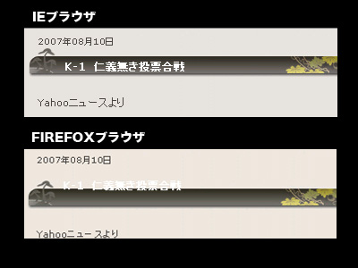
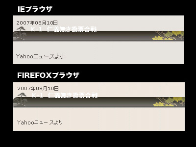
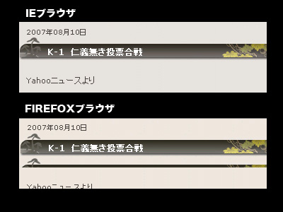
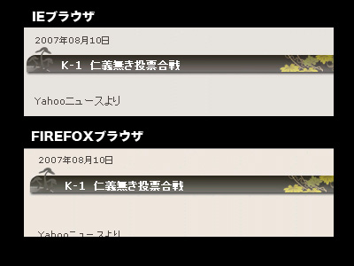
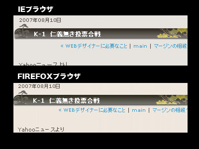

実は、このブログ、ブラウザ間での表示バグあります。
検証してるのは、IEとFirefoxだけですが。。。
他のブラウザは未検証…ヽ(´ー｀)ノ
WEBデザイナーとしては致命的？？
まあ、悪い見本として（汗）

div.entry-headerimg(※バックのタイトル背景部分)
{
height:35px;
margin:0 0 0 0;
background-image:url(./img/titlebar.jpg);
}
h3.entry-header(※タイトル文字部分)
{
margin:15px 0 0 40px;
}
IEでCSSコーディングを進めたため、
Firefoxで見ると偉いこっちゃになっていて、仕事じゃないし、
直すのめんどくさいし、まあいいやーってほったらかしにしておりました！！
HTML/CSSコーディングで俗にいう
「マージンの相殺」
っていう現象とブラウザ仕様の相違により
こういう現象が起こっているのかな？？と想像。
でも、実際調べてみるとマージンの相殺ではなさそう？？
■がんばって修正その１
【タイトル文字部分】のmargin(top)を変更
margin:15px 0 0 40px;
↓
margin:0px 0 0 40px;

div.entry-headerimg(※バックのタイトル背景部分)
{
height:35px;
margin:0 0 0 0;
background-image:url(./img/titlebar.jpg);
}
h3.entry-header(※タイトル文字部分)
{
margin:0px 0 0 40px;
}
上手く表示されていないように見えるが、
CSSコーディングの狙いどおりの表示であり、
IEとFirefoxのブラウザ間での相違は無い。
■がんばって修正その２
【バックのタイトル背景部分】にpadding追加
padding:15px 0 0 0;

div.entry-headerimg(※バックのタイトル背景部分)
{
height:35px;
margin:0 0 0 0;
padding:15px 0 0 0;
background-image:url(./img/titlebar.jpg);
}
h3.entry-header(※タイトル文字部分)
{
margin:0px 0 0 40px;
}
縦方向での位置関係はIE,Firefoxで同じ！！
ただ、Firefoxでは背景画像がリピートされて下に少し表示されてしまっている。
■がんばって修正その３
【バックのタイトル背景部分】に
background-repeat:no-repeat;
追加

div.entry-headerimg(※バックのタイトル背景部分)
{
height:35px;
margin:0 0 0 0;
padding:15px 0 0 0;
background-image:url(./img/titlebar.jpg);background-repeat:no-repeat;
}
h3.entry-header(※タイトル文字部分)
{
margin:0px 0 0 40px;
}
バッチリ！！！！！！！！
と思いきや、「yahooニュースより」の始まりの位置（縦方向）の違いに気づく。。
が、修正はめんどくさいのでしない。。。
というか、原因が分からん。。誰か教えてください！！
IE,firefoxのブラウザ仕様なのか、ブラウザバグなのかは謎。。
しかし、ブラウザ間のこういう細かい相違はWEBデザイン関係者を苦しめる。。
■追可修正
・marginセットとしてpadding追加
・width追加
・float:left追加

div.entry-headerimg(※バックのタイトル背景部分)
{
float:left;
width:475px;
height:35px;
margin:0 0 0 0;
padding:0 0 0 0;
background-image:url(./img/titlebar.jpg); background-repeat:no-repeat;
}
h3.entry-header(※タイトル文字部分)
{
font-size:12px;
font-weight:bold;
color:#ffffff;
margin:15px 0 0 40px;
padding:0 0 0 0;
}
戦え！Webデザイナーさんのお助けもあり、
IEとfirefoxでだいぶ近い形に。（若干ズレがあるが。。。)
float:leftにて「マージンの相殺」が起こらないと、
どこかで読んだけど、その通りでmarginの縦方向での
おかしな現象はなくなった。
ということは、やはりマージンの相殺が問題であったのか。。。
さてはて・・・
ちなみにIEとFirefoxで色が少し違うんだけど何だろう。。。
(・ε・)ｷﾆｼﾅｲ!! っ方向で考えてたけど、明らかに違う色もあるし。。
ブラウザ世界統一を希望！！


 奇跡的な一枚
奇跡的な一枚 最近のアルバムに通じるヘヴィネスを持った聴き応えのあるアルバムです
最近のアルバムに通じるヘヴィネスを持った聴き応えのあるアルバムです

 使いやすくはなったようにも
使いやすくはなったようにも しみじみ重い
しみじみ重い